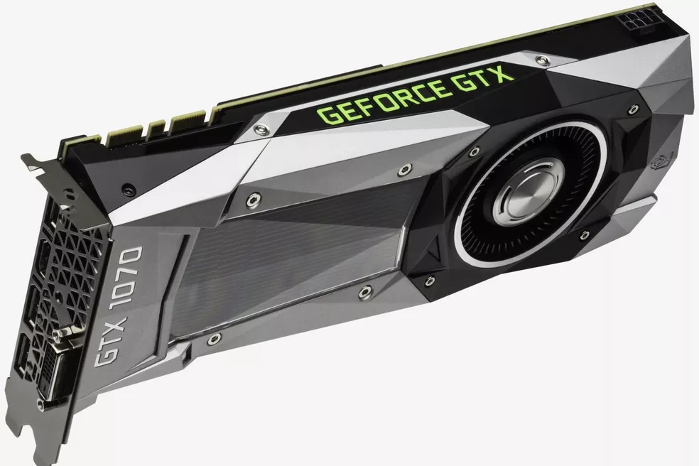

GTX 1070 vs RTX 2060: compare as placas de vídeo Nvidia
postado 11 de Julho de 2022 As duas GPUs contam com boas especificações, trazendo um número de núcleos razoável e clocks bem elevados.
Leia maisO que é o clock do PC? Conheça o indicador de performance em CPUs
postado 10 de Julho de 2022
Clock ou frequência é um termo utilizado para determinar a velocidade de um processador de um computador em Hertz (Hz).
Leia maisPlaca-mãe gamer: 6 modelos para montar um computador para jogos
postado 08 de Julho de 2022Empresas como Asus e Gigabyte oferecem modelos por preços a partir de R$ 659; componente é responsável por conectar as peças do PC
Leia mais
Todos os direitos reservados